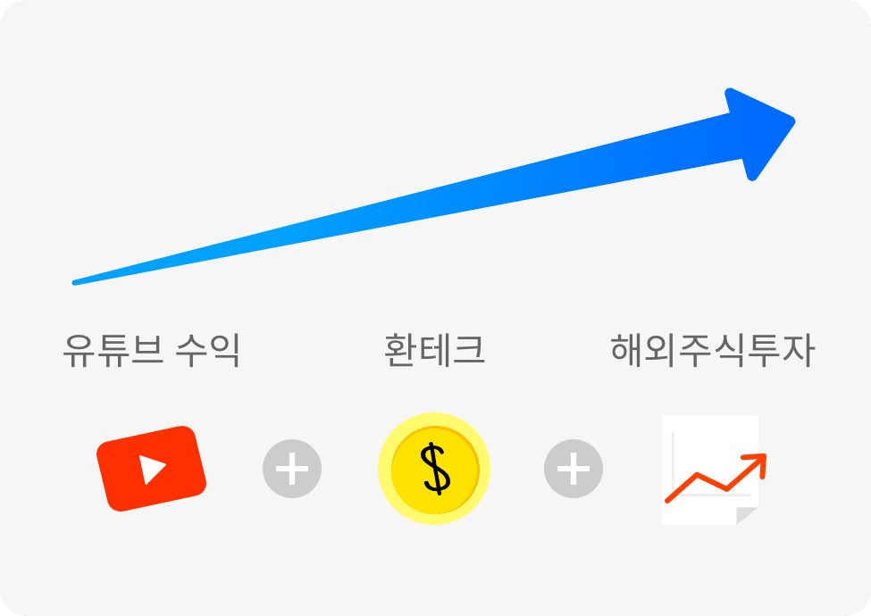

어서와! 유튜버는 처음이지?
-
유튜버는 어떻게 수익을 내나요?
유튜브로 수익을 내는 방법- 영상 사이 삽입되는 광고
- 라이브 스트리밍 슈퍼챗
- 채널 멤버십(월간구독)
- 유튜브 프리미엄 시청 수익
국세청 자료에 따르면 유튜버 1인당 연간 평균 수익은 3,000만원 정도에요.
이들 중 상위 10%의 연평균 수익은 2억을 넘는다고 해요! -
수익을 받을 때 주의할 점이 있나요?
유튜브 등 외국 플랫폼은 매달 지정일에 일정 수수료와 세금을 뺀 정산액을 원화가 아닌 미국달러로 지급해요.
이때 수익금 정산 계좌를 원화통장 또는 외화통장으로 설정할 수 있는데요. 만약 원화통장으로 등록했다면 외화로 송금된 금액이 원화통장으로 입금 될 때 실시간 환율이 적용되기 때문에 의도치 않은 환차손이 생길 수 있어요.
환차손을 피하려면 외화통장을 만들어서 달러로 바로 받으면 돼요.
외화통장으로 환율 및 수수료를 관리할 수 있으니 선택이 아닌 필수죠!
내 소중한 콘텐츠로 벌어들인 수익에 작은 손해도 생기지 않게 외화통장을 꼭 준비하세요. -
더 큰 수익을 내려면 어떻게 해야하나요?

Step 1유튜브 컨텐츠로 수익올리기
Step 2환테크를 통해 수익 불리기
하나원큐에서 미리 원하는 환율을 설정하고, 목표 환율에 도달했을 때 카카오톡으로 바로 알림을 받고 환전하세요.
Step 3불어난 수익금을 해외주식에 투자하기
하나 밀리언달러 통장에서 달러로 미국주식을 매수 할 수 있고, 매도할 때는 통장으로 바로 달러로 받을 수 있어요.
유튜버를 위한 외화통장 활용 꿀팁!-
자동 계좌 지급 서비스
해외송금인이 입력한 수취인 명과 실제 은행에 등록된 수취자의 영문명이 같으면 최대 $ 5,000 (USD)까지 자동으로 계좌에 입금됩니다.
Google 결제수단에 등록된 예금주의 이름과 하나은행에 등록된 고객 영문명이 같은지 꼭 확인하세요!
누구보다 빠르게 남들과는 다르게 자동으로 송금받을 수 있어요.
-